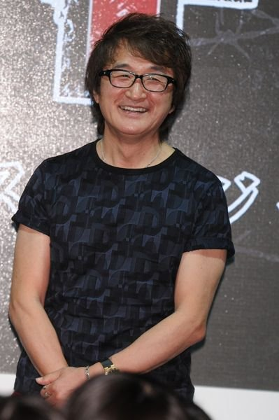
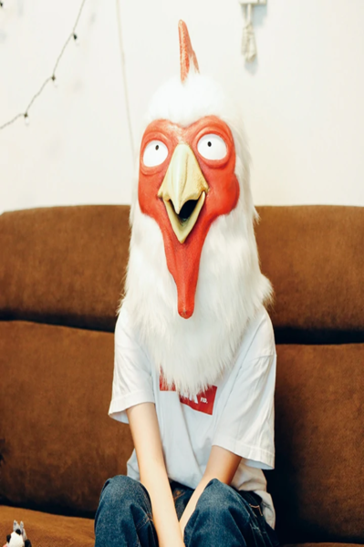

Autor
Keisuke Itagaki
Keisuke Itagaki (板垣 恵 介, Keisuke Itagaki), nacido el 4 de abril de 1957, es un mangaka japonés. Su obra más famosa es la obra de artes marciales Baki the Grappler. En 1996 comenzó a trabajar como ilustrador en el manga Garōden, una obra original de Baku Yumemakura. Antes de convertirse en un artista de manga, trabajó 5 años en la 1ª Brigada Aerotransportada de la Fuerza Terrestre de Autodefensa de Japón. Durante su servicio practicó boxeo amateur y ha competido en el Festival Nacional de Deportes. También es experto en Shorinji Kempo, disciplina que ha practicado desde que era un adolescente. Keisuke Itagaki es padre de la dibujante Paru Itagaki, autora del manga Beastars.
- Debuta con Make-upper en 1989.
- Le gusta hacer ejercicio.
- Motonobu Inouse y Hitoshi Tomizawa fueron sus asistentes.
- Mitsutoshi Shimabukuro y Rin Kasahara son sus amigos.
Paru Itagaki
Nacida en Tokio, comenzó a dibujar desde pequeña y se conocen pocos detalles sobre su vida privada. Es hija del mangaka Keisuke Itagaki, autor de la serie Baki the Grappler, y en casi todas sus apariciones públicas sale con una máscara de gallina. Entre sus influencias como autora ha citado a Nicolas de Crécy, Egon Schiele y los dibujos animados de Walt Disney. Estudió dirección de cine en la Universidad de Arte de Musashino, mientras seguía dibujando manga a nivel amateur con obras autoeditadas que luego vendía en convenciones de dōjinshi. La mayor parte de esos trabajos estaban protagonizados por animales antropomórficos, un rasgo distintivo de su obra. Después de graduarse no encontró trabajo, por lo que envió los mangas que había publicado a varias editoriales. Finalmente, en 2016 llegó a un acuerdo con Akita Shoten para publicar su primera obra, Beast Complex, en la revista Weekly Shōnen Champion. A raíz de la buena acogida de Beast Complex, en septiembre de 2016 comenzó la serialización de Beastars su obra más conocida.
- El nombre "Paru" es en realidad en seudónimo, su nombre de pila real al igual que su rostro son privados.
- Paru Itagaki es zurda.
- Su padre también es un mangaka, Keisuke Itagaki, conocido por su obra más famosa "Baki the Grappler".
- Esto fue por mucho tiempo algo especulado por los fans, y se había mantenido en secreto hasta la publicación del #42 del año 2019 de la Shūkan Shōnen Champion, donde se revelo el parentesco de los dos mangakas.